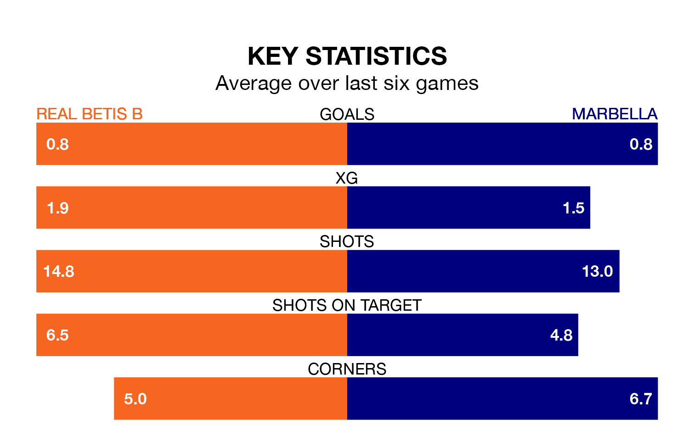

Real Betis B host Marbella in Sunday's early match at Ciudad Deportiva Luis de Sol looking to bounce back from defeat last time out in the Segunda División RFEF Group 4.
Betis B, who sit fourth in the league after 29 games, fell to a 2-1 home defeat to La Unión Atlético on March 31.
They face a Marbella side who picked up a win in their last match, a 2-1 victory against CD San Roque de Lepe, and who sit third in the table.
With 36 goals in 29 games so far this season, Betis B are the league's third-highest scorers with 1.2 goals per game. And they are conceding fewer than average, letting in 25 goals at a rate of 0.9 per game.
Marbella are also above average scorers, with 1.1 goals per game, compared to a league average of 1.0. They have conceded 0.8 goals per game.
In the last 10 years, Betis B and Marbella have played each other on seven occasions. Betis B won one of them, Marbella four, and they drew twice.
On average, Betis B scored 1.4 goals and Marbella 2.0 in those matches.
Their last meeting was on November 26, when Betis B won 2-0 away.
The home team are in mixed form in the Segunda División RFEF Group 4, with two wins and a draw from their last six games.
With three wins and a draw over that period, the visitors' form is better – they have taken 10 points from 18, compared to Betis B's seven.
Updated: 16:41 (UTC), 04/04/24